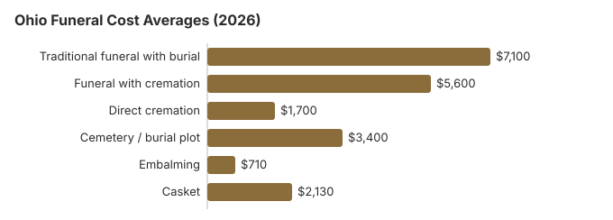

Funeral Costs in Ohio: What Families Pay in 2026
An Ohio funeral is a long list of separate purchases, from the service fee and casket to the plot and headstone, and most of them can be negotiated. Knowing the typical range for each can be the difference between a bill of $5,680 and one of $8,875.
Ohio Funeral Costs by Item
The state licenses Ohio funeral homes but leaves pricing to each one.
| Service | Average Cost | Range |
|---|---|---|
| Traditional funeral with burial | $7,100 | $5,325 – $9,230 |
| Funeral with cremation | $5,600 | $4,480 – $7,280 |
| Direct cremation | $1,700 | $1,190 – $2,380 |
| Cemetery / burial plot | $3,400 | $1,700 – $6,800 |
| Embalming | $710 | $500 – $1,500 |
| Casket | $2,130 | $710 – $5,680 |
A note on the figures: they are produced by our cost model for Ohio, not by surveying Ohio funeral homes, and nothing here is a quote or professional advice. Method · disclaimer.
State sources: Ohio Rev. Code § 9.15; Ohio Admin. Code 4717-17-06; R.C. 4717.31; R.C. 4717.311.

Your Consumer Rights in Ohio
An Ohio home that ignores the rule can be reported at ftc.gov, and the Funeral Consumers Alliance offers guidance.
Less Expensive Choices in Ohio
| Option | Approx. Cost | In brief |
|---|---|---|
| Direct cremation | $1,700 | Cremation without a viewing or service, after Ohio's 24-hour waiting period (Ohio Rev. Code § 4717.23). |
| Direct burial | $3,550 | Burial without embalming or visitation; the cemetery charges for the grave and opening on top. |
| Green burial | $3,905 | A natural burial, no embalming or vault, at Ohio cemeteries that allow one. |
| Cremation + memorial | $5,600 | Cremation plus a later memorial |
| Traditional funeral | $7,100 | Visitation, funeral and burial |
More Ohio Cost Guides
Ohio guides by type:
Cremation Costs in Ohio
What cremation costs in Ohio, about $1,700 direct or $5,600 with a service, plus urns and scattering. 55% of Ohio deaths now end in cremation.
Burial Costs in Ohio
Ohio burial costs in full, a $3,400 plot plus casket, vault, headstone and opening, totaling $16,190 to $20,690.
Cremation or Burial in Ohio?
Cremation
- Direct: roughly $1,700
- With a service: roughly $5,600
- No plot to buy
- Flexible timing for a memorial
- 55% of Ohio families
Traditional Burial
- Service: roughly $7,100
- Plot: roughly $3,400 more
- Cemeteries usually require a vault or liner
- A place for the family to return to
- Metal casket, US median about $2,500 (NFDA 2023 General Price List Study); Ohio prices depend on the seller
Why Ohio Prices Differ
Ohio sits a little under the $8,300 national median, like much of the Midwest, but homes in Columbus, Cleveland and Cincinnati commonly charge 10-30% more than small-town ones.
Major Cities in Ohio
Our estimates for Ohio's larger cities:
Funeral Assistance in Ohio
- Indigent burial help under § 9.15 comes from the township, or the city, not the county; the local government, not the family, then seeks reimbursement from the state board (Ohio Admin. Code 4717-17-06).
- Social Security's one-time $255 is paid to an eligible spouse or child who calls 1-800-772-1213 within two years.
- An Ohio veteran's funeral can be partly repaid to whoever covered it, through VA Form 21P-530EZ, which pays as much as $1,032 for burial and the same for a plot for a non-service-connected death from October 1, 2026 (more in our veteran burial benefits guide).
- Medicaid and charity options are in our payment assistance guide; and options when the family has no money.
Educational Resources
- Funeral Consumers AllianceIndependent nonprofit consumer advocacy for funeral rights
- FTC Funeral RuleThe federal rule protecting funeral consumers
- Funeral Insurance GuideCompare final expense and burial insurance options
- Best Burial Insurance CompaniesSide-by-side comparison of top burial insurance providers
- Payment Assistance GuideGovernment programs and financial help for funeral costs
- Insurance Plan ComparisonCompare coverage, premiums, and payout speed across providers
Compare Funeral Costs
- Average Funeral Cost in 2026National cost breakdown with real prices
- Cremation vs. Burial Cost ComparisonSide-by-side price comparison to help you decide
- Funeral Cost BreakdownEvery line item explained: know what you're paying for
- Cheapest Funeral OptionsLower-cost alternatives, with typical price ranges
- Direct Cremation: Most Affordable OptionNFDA 2023 median $2,645 with a family-supplied container (latest available)
- How to Compare Funeral PricesStep-by-step guide to getting the best price
Two Ohio Rules That Affect Cost
Ohio makes families wait 24 hours before a cremation (Ohio Rev. Code § 4717.23), so even a direct cremation cannot be completed the same day. And a prepaid funeral plan that includes funeral services can be sold only by a licensed funeral director (R.C. 4717.31), which is worth confirming before you pay into one.
Ohio Charges Worth Questioning
- Embalming presented as legally required. In Ohio it almost never is.
First Steps for an Ohio Funeral
Taken in this order, these steps avoid the costliest mistakes Ohio families make:
- Settle on burial or cremation: cremation in Ohio or burial in Ohio.
Ordering an Ohio death certificate
The Ohio Department of Health charges $21.50 for each certified copy of a death certificate (Ohio Rev. Code 3705.24). Since January 1, 2025, the search fee is kept even when no record is found (Ohio Department of Health, ordering certificates; checked October 29, 2026).
- Online: processed in about five business days and delivered in roughly three weeks. ODH offers no expedited service.
- Mail: to Ohio Department of Health, Vital Statistics, PO Box 15098, Columbus, OH 43215-0098; allow four to six weeks.
- Older deaths: ODH holds only the last 50 years of death records. Older ones come from the local health district or county probate court.
- Social Security numbers: a copy showing the SSN, within five years of the death, is limited to authorized requesters such as the informant, family and the funeral director.
Local health districts also issue certificates, often faster, and the funeral home can usually order the first set for you. Banks, insurers and pension plans typically want a certified copy each, so count before ordering at $21.50 apiece. ODH's Vital Statistics office is at 614-466-2531.
Ohio's board, township burial help and veterans cemeteries
Ohio's Board of Embalmers and Funeral Directors licenses funeral directors and funeral homes; 614-466-4252 is the number for license checks and complaints.
The Funeral Consumers Alliance's list of nine states that restrict home funerals leaves Ohio out, and Ohio families are free to buy only what they need. The state does require a 24-hour wait before cremation (Ohio Rev. Code § 4717.23).
Indigent burial
Under Ohio Rev. Code § 9.15, the township or city where a person lived pays for burial or cremation when the body is unclaimed or claimed by someone with income at or below 150% of the federal poverty line. The state board can reimburse that local government up to $1,000 for an adult or $750 for a child 11 or younger while the program's money lasts (Ohio Rev. Code § 9.15; Ohio Admin. Code 4717-17-06).
Prepaid funeral contracts in Ohio
Only a licensed funeral director may sell an Ohio preneed contract that includes funeral services (R.C. 4717.31). The person holding the money, or the seller, has to check on the beneficiary in the year he or she turns 105; if no one can confirm the person is alive, the money goes to the state's unclaimed funds program (R.C. 4717.311). If a parent bought a plan years ago, ask the funeral home named in it for the contract before making new arrangements.
Veterans
Ohio's open national cemeteries are Dayton National Cemetery (937-268-2221) and Ohio Western Reserve National Cemetery in Seville, Medina County (330-335-3069). The funeral home schedules them through the VA's National Cemetery Scheduling Office on 800-535-1117. The state's Ohio Veterans Home Cemetery in Sandusky (419-625-2454) takes requests directly.
Ohio checklist
- Put two Ohio price lists next to each other and go through every line.
- Ask whether embalming is actually needed for what you have planned.
- Before choosing a home, call the township or city fiscal officer where the person lived about § 9.15 help.
- For a veteran, weigh Dayton or Ohio Western Reserve against a private plot.
- If a home will not honor its price list, call the board at 614-466-4252.
Frequently Asked Questions
How much does a funeral cost in Ohio?
We estimate about $7,100 for a traditional funeral with burial, $5,600 for cremation with a service and from $1,700 for direct cremation, with a plot adding about $3,400. To pin down your own number, compare General Price Lists from two or three nearby homes line by line.
Does cremation cost less than burial in Ohio?
By at least $5,400 for most families: direct cremation starts near $1,700, while a funeral with burial averages about $7,100 before the plot or vault.
What protections do Ohio families have?
The FTC Funeral Rule guarantees itemized prices, phone quotes and the right to pick only the goods and services you want. Ohio, per the Funeral Consumers Alliance, does not require a funeral director for every step. Take complaints to the Ohio Board of Embalmers and Funeral Directors, 614-466-4252.
What is the best way to save on an Ohio funeral?
Get two or three price lists from homes near you before committing. Ask about township cemeteries, which are common in Ohio, rarely advertised and often half the price of private ones; the township or county office can help. Family-owned homes, still most of Ohio's market, usually price more openly than chains, and direct cremation at about $1,700 is the cheapest option anywhere in the state.
Is embalming required in Ohio?
Generally no. An Ohio funeral home cannot tell you embalming is legally required unless that is true, and the price list must note it is needed only in particular situations. Refrigeration usually serves instead; a home that disagrees should give its reason on paper.
How do Ohio prices compare, and who can sell a prepaid plan?
NFDA puts the 2023 national median at $8,300 for a funeral with viewing and burial and $6,280 with cremation; set those beside the Ohio table here, then collect several price lists, because single homes stray far from any average. If you are weighing a prepaid plan, Ohio allows only a licensed funeral director to sell a preneed contract that includes funeral services (R.C. 4717.31). The holder of the money, or the seller, must also check on the beneficiary in the year they turn 105, and if no one can confirm they are alive the funds go to the state's unclaimed funds program (R.C. 4717.311).
Which Ohio funeral option costs least?
Direct cremation, from roughly $1,700. Direct burial comes next at around $3,550; it skips embalming and the service, but you still need a plot, about $3,400 in Ohio.
How do I find a low-cost funeral home in Ohio?
Call three Ohio homes, request their General Price Lists, and line up the direct cremation and immediate burial prices. You can supply your own casket or urn, and the home may not charge a fee for handling it.